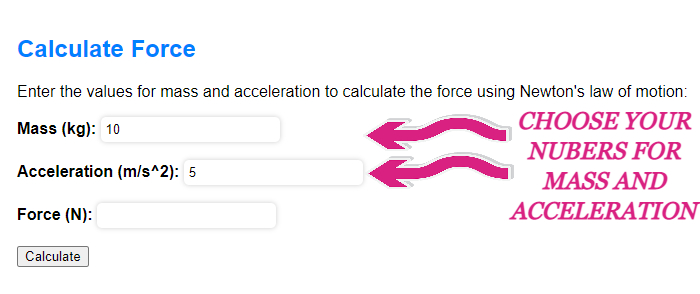

Calculate Force
Newton's first law of motion states that an object at rest will remain at rest, and an object in motion will remain in motion with a constant velocity, unless acted upon by a net external force. This law can be used to calculate the force required to move an object with a given mass and acceleration.
To calculate the force using Newton's first law, you will need to follow these steps:
- Determine the mass of the object in kilograms (kg).
- Determine the acceleration of the object in meters per second squared (m/s2).
- Multiply the mass by the acceleration to calculate the force in newtons (N).
For example, if an object has a mass of 10 kg and is accelerating at a rate of 5 m/s2, you can calculate the force required to move the object as follows:
- Mass = 10 kg
- Acceleration = 5 m/s2
- Force = Mass x Acceleration = 10 kg x 5 m/s2 = 50 N
Therefore, the force required to move the object is 50 newtons.
How To Deal With It
Here are some useful instructions related to Newton's Laws of Motion:
